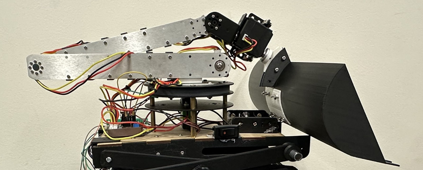
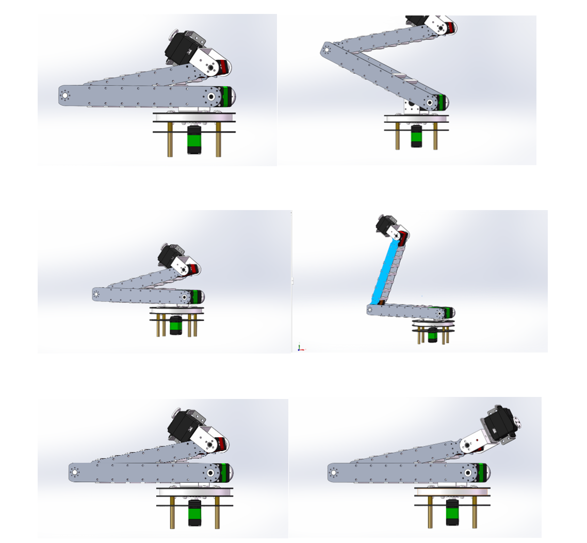
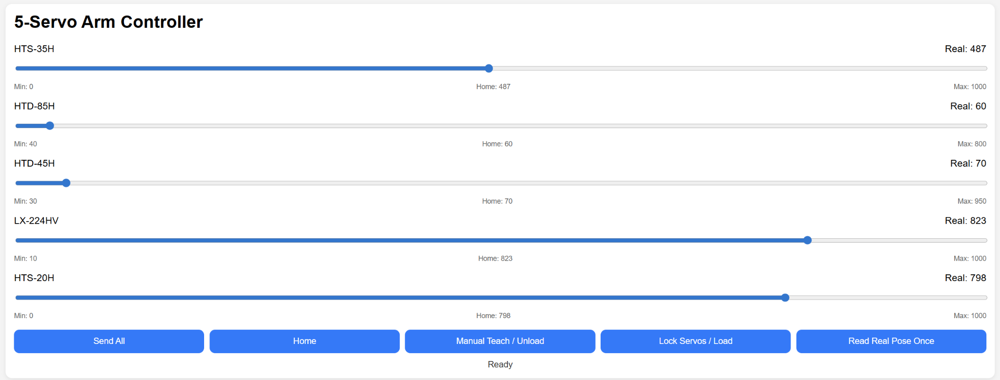
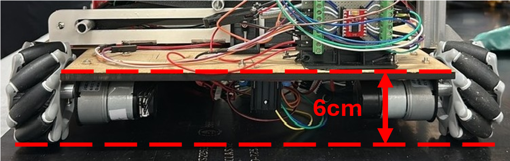
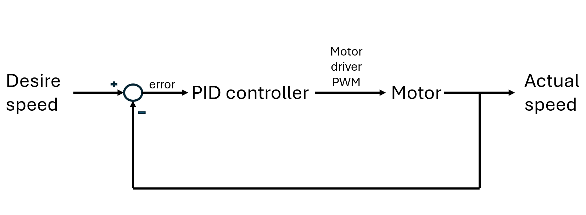
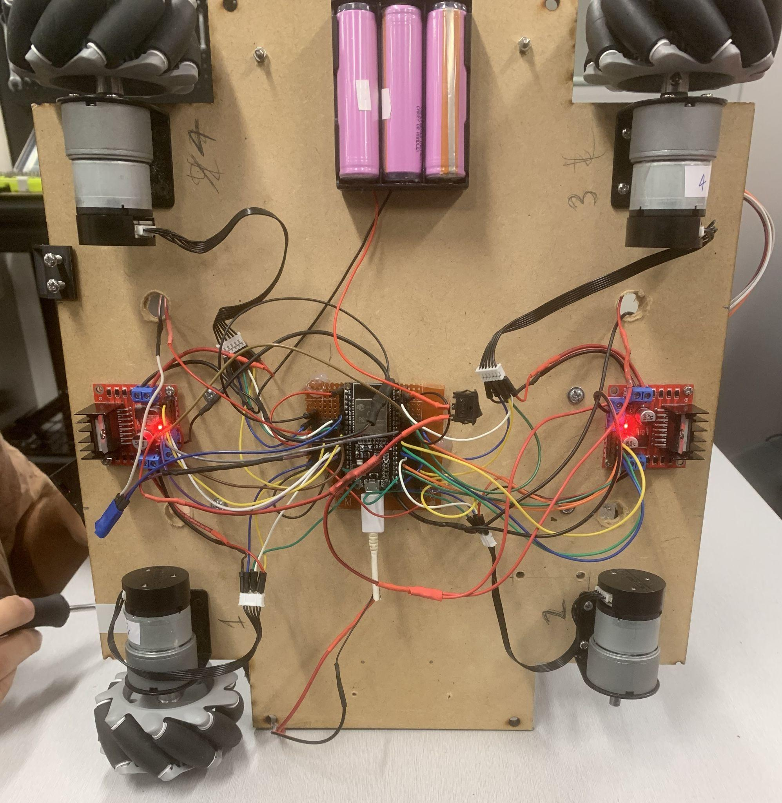
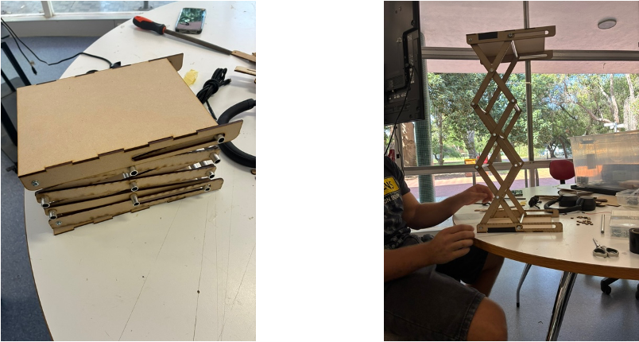
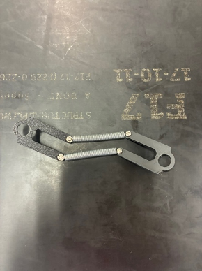
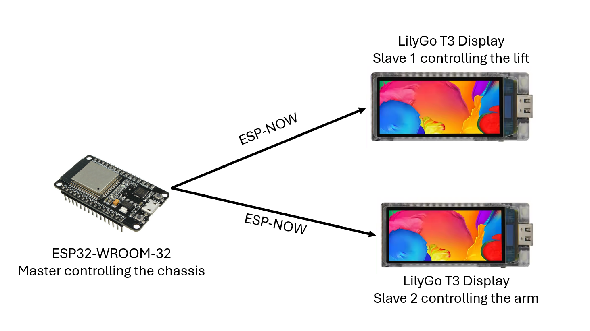

2026 Weir Warman Competition - Autonomous Transporter Robot
Description
A fully autonomous material-handling robot built by a team of 4 for the 39th Warman Design & Build Competition 2026 ("Project REEP"), run by Engineers Australia and sponsored by Weir. The robot must collect six simulated ore rocks from a dump zone, transport them across the course, deposit them into an elevated hopper, and return to the end zone — all within 120 seconds, from a single button press, with no remote control allowed.
The Challenge:
- Fully autonomous: One single start action, no wireless/remote control during the run.
- Size & weight limit: The entire system must fit inside a 400 mm cube at the start and weigh under 6 kg.
- The task: Collect six PLA "rocks" (~140 g total) from a 400×400 mm dump zone and deposit them into a 100 mm diameter hopper standing 298 mm tall.
- Scoring: Points for collecting, supporting, and depositing rocks, finishing in the end zone, plus a time bonus for a perfect run.
Robot Showcase:
Design Overview:
The robot integrates three main mechanical subsystems, each with its own microcontroller, working together as one distributed system:
- Mecanum Chassis: Omnidirectional mobile base for precise positioning.
- Scissor Lift: Raises the arm to the hopper height without relying on the ramp.
- 5-DOF Mechanical Arm + Scoop: Sweeps up all six rocks at once and dumps them into the hopper.
Mechanical Arm & Scoop:
A servo-driven arm with five degrees of freedom (rotating base, two arm joints, wrist, and scoop) collects all rocks in a single sweeping motion — far more tolerant to rock placement than a gripper. The arm is built from aluminium side plates joined by 3D-printed mounting blocks, with a cone-shaped scoop that guides rocks in and retains them during transport.


Arm motion is organised into motion frames and groups: each frame stores target positions for all five servos, and groups are played back step-by-step on trigger signals, keeping the arm synchronised with the chassis and lift. A web interface allows manual servo control and motion recording, with calibrated sequences saved to flash (FFat) so they survive restarts.

Chassis — Omnidirectional Drive:
The 37×34 cm chassis is laser cut from 6 mm MDF and driven by four 520 geared DC motors (1:60 gearbox, Hall-effect encoders, 730 ticks/rev) with 80 mm mecanum wheels. Holonomic motion lets the robot translate sideways and diagonally without turning, drastically reducing odometry error when docking against the ramp and hopper.

Motor speed is regulated by a closed-loop PID controller (Kp = 2.0, Ki = 0.8, Kd = 0.02) running on a 20 ms cycle with anti-windup and feedforward bias, on top of 20 kHz PWM with deadband compensation and a soft-launch ramp to prevent wheel slip. This keeps all four wheels at identical RPM — critical for accurate mecanum kinematics.

All electronics are soldered onto a custom proto-board for robustness, with separated power circuits: a 12V supply for the motors and an isolated battery pack for the ESP32 logic to protect it from voltage spikes.

Scissor Lift:
To reach the hopper without driving up the ramp, a scissor lift raises the 2.2 kg arm assembly. The first prototype was laser-cut 3 mm MDF, but friction and flex made it unreliable — the final version was 3D printed in PETG for its lower friction coefficient and higher strength.

Two 100 mm / 188 N linear actuators driven by TB6612FNG motor drivers extend the lift, assisted by a spring mechanism that offloads the actuators at the low starting angles where the required force is highest. An MMA8452Q 3-axis tilt sensor detects uneven extension between the two sides so the controller can level the lift during operation.

System Integration — ESP-NOW:
The three subsystems each run their own ESP32 and communicate wirelessly over ESP-NOW in a star topology: the chassis ESP32-WROOM-32 acts as the master, dispatching commands to the two LilyGo TTGO slaves controlling the lift and the arm. Replacing serial cables with low-latency 2.4 GHz messages eliminated cable fatigue and snagging between moving subsystems.

Results:
- 6/6 rocks collected, retained, and deposited into the hopper in the best run.
- Best run time: 73 seconds (well under the 120 second limit).
- 8 successful runs out of 10 trials after tuning lift timing, scoop motion, and setup position.
- Total system mass: 5.1 kg — under the 6 kg limit. Total component cost: ~$477.